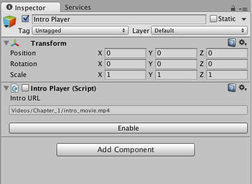
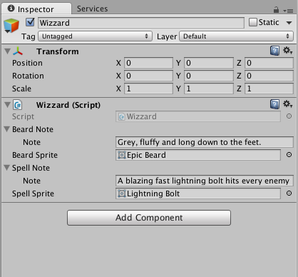
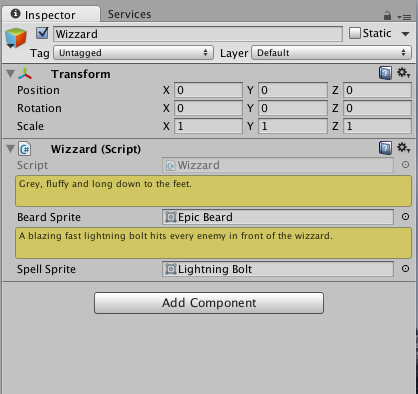
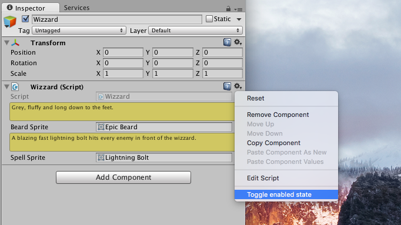
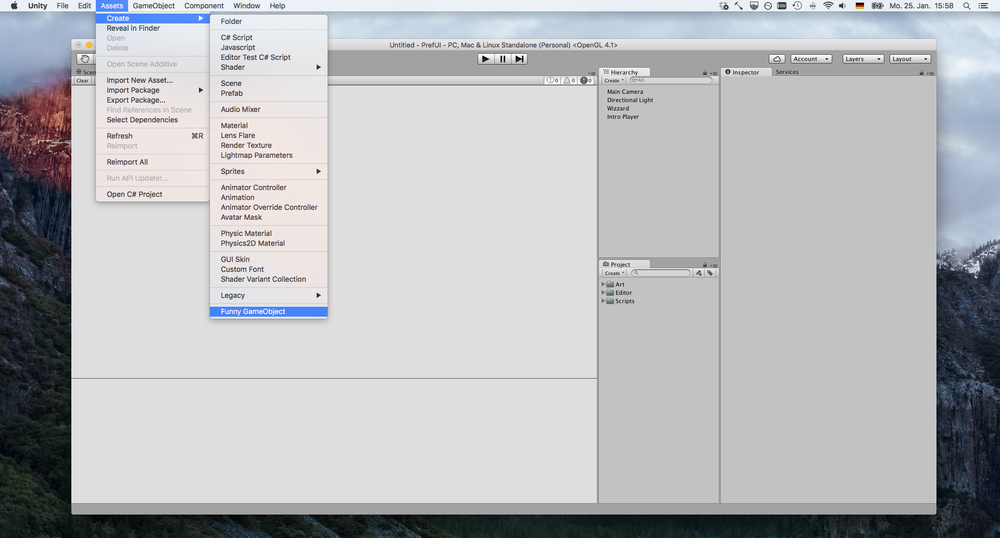
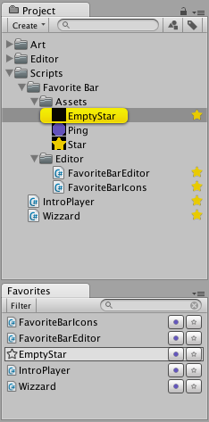
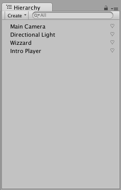

Introduction
Layout
Most UI widgets are available in an auto layout version, and a version where the user manually sets a rect in whicht to draw the widget.
Auto layout widgets are in GUILayout.* and EditorGUILayout.*.
Manual layout widgets are in GUI.* and EditorGUI.*.
Styles
Editor styles are in UnityEditor.EditorStyles.*, regular runtime styles are in GUI.skins.*.
Be carefull not to change the default styles, as that would change all uses of that style, even the Unity editor itself. Always make a copy of a style that you cant to change, change the copy and use that copy.
var helpBoxStyle = new GUIStyle(EditorStyles.helpBox);
helpBoxStyle.normal.textColor = Color.blue;
Inspector
We can change the appeareance of a MonoBehaviour or a ScriptableObject in the inspector by implementing our own Editor for a given type.

Lets say we have the following simple behaviour.
using UnityEngine;
public class IntroPlayer: MonoBehaviour
{
[SerializeField] private string introURL;
void Start()
{
// Play the intro
}
}
We can make a custom editor that could for example give us a button to enable or disable the intro movie, as well as making the text input field larger to make editing longer paths more comfortable.
using UnityEngine;
using UnityEditor;
[CustomEditor(typeof(IntroPlayer))]
public class IntroPlayerEditor: Editor
{
public override void OnInspectorGUI()
{
serializedObject.Update();
var property = serializedObject.FindProperty("introURL");
EditorGUILayout.LabelField("Intro URL");
property.stringValue = EditorGUILayout.TextField(property.stringValue, EditorStyles.helpBox);
serializedObject.ApplyModifiedProperties();
EditorGUILayout.Space();
var introPlayer = target as IntroPlayer;
var buttonText = introPlayer.enabled ? "Disable" : "Enable";
if (GUILayout.Button(buttonText))
{
introPlayer.enabled = !introPlayer.enabled;
}
}
}
Put inspector extentions in a Editor folder to avoid problems when building.
If you only want to add additional UI widgets to the default inspector, you can draw the default UI by calling base.OnInspectorGUI().
using UnityEngine;
using UnityEditor;
[CustomEditor(typeof(IntroPlayer))]
public class IntroPlayerEditor: Editor
{
public override void OnInspectorGUI()
{
base.OnIspectorGUI();
var intro = target as IntroPlayer;
var buttonText = introPlayer.enabled ? "Disable" : "Enable";
if (GUILayout.Button(buttonText))
{
intro.enabled = !intro.enabled;
}
}
}
Constant redrawing
If your editor needs to be repainted constantly, override RequiresConstantRepaint in your editor:
public override bool RequiresConstantRepaint()
{
return true;
}
Inspector width
Sometimes you may need to know the width of the inspector view in order to calculate the positions of your widgets. Don't use Screen.width for that. You can often find that online, but using Screen.width won't work well if Unity is running in HiDPI mode.
Instead use EditorGUIUtility.currentViewWidth
Property Drawer
Instead of creating a custom editor for a MonoBehavior or a ScriptableObject that replace the default UI completely, you can create a custom editor for a specific type and only fields of that type will use your custom UI, the remaining inspector will still be the default one.
 
Lets say we have a custom type that replresents a description for an item
[System.Serializable]
public class Note
{
[SerializeField] private string note;
}
We would use such a type like so
public class Wizzard: MonoBehaviour
{
[SerializeField] private Note beardNote;
[SerializeField] private Sprite beardSprite;
[SerializeField] private Note spellNote;
[SerializeField] private Sprite spellSprite;
}
public class Gunslinger: MonoBehaviour
{
[SerializeField] private Note hatNote;
[SerializeField] private Sprite hatSprite;
[SerializeField] private Note revolverNote;
[SerializeField] private Sprite revolverSprite;
}
If we want to let the the Note stand out a bit every time it is seen in the inspector without creating custom editors for each an every MonoBehaviour or ScriptableObject that uses it, we can use PropertyDrawers.
using UnityEngine;
using UnityEditor;
[CustomPropertyDrawer(typeof(Note))]
public class NotePropertyDrawer: PropertyDrawer
{
public override float GetPropertyHeight(SerializedProperty property,
GUIContent label)
{
return EditorGUIUtility.singleLineHeight * 2f;
}
public override void OnGUI(Rect position,
SerializedProperty property,
GUIContent label)
{
EditorGUI.BeginChangeCheck();
var originalColor = GUI.color;
GUI.color = Color.yellow;
var noteProperty = property.FindPropertyRelative("note");
var helpBoxStyle = new GUIStyle(EditorStyles.helpBox);
var newNoteText = EditorGUI.TextField(position,
noteProperty.stringValue,
style: helpBoxStyle);
GUI.color = originalColor;
if (EditorGUI.EndChangeCheck())
{
noteProperty.stringValue = newNoteText;
}
}
}
Custom property drawers should be placed inside an Editor folder.
Component Context Menu
You can put your own functionallity in the context menu of components inspector. This menu is either reachable by a right click on an empty space in an components inspector area or by clicking on the gear icon in the upper right.

using UnityEngine;
public class MyBehaviour: MonoBehaviour
{
[ContextMenu("Toggle enabled state")]
public void ToggleEnableState()
{
enabled = !enabled;
}
}
This can be usefull if you want to trigger some gameplay events while being in the Unity editor play mode.
Menu Bar
You can put your own entries in the unity menu bar. Some paths have special meaning though, like the Assets/Create/ path, where items in that path are also displayed in the Create section of the hierarchy view context menu.

using UnityEngine;
using UnityEditor;
public static class MyMenuFunctionality
{
[MenuItem("Assets/Create/Funny GameObject")]
private static void CreateFunnyGameObject()
{
var gameObject = new GameObject("I'm fun.");
gameObject.transform.position = Vector3.zero;
}
}
Windows
Put editor window scripts in a folder called Editor to avoid build issues
Dockable Windows
using UnityEngine;
using UnityEditor;
public class MyEditorWindow: EditorWindow
{
void OnGUI()
{
// Your GUI code
}
}
Opening a custom window can be done with EditorWindow.GetWindow
using UnityEngine;
using UnityEditor;
public static class WindowOpener
{
[MenuItem("Window/MyWindow")]
private static void Open()
{
var window = EditorWindow.GetWindow<MyEditorWindow>();
window.Show();
}
}
Of course you can also put the afore mentioned Open method inside your custom EditorWindow class.
The following is an comprehensive example building on top of the favorites example from the custom project view chapter.
using System.Collections.Generic;
using UnityEngine;
using UnityEditor;
using System;
public class FavoriteBarEditor: EditorWindow
{
private string searchString = "";
private string filter;
public static bool IsOpen
{
get;
private set;
}
List<string> Types(List<string> GUIDs)
{
List<string> types = new List<string>();
foreach (var GUID in GUIDs)
{
var path = AssetDatabase.GUIDToAssetPath(GUID);
var elementObject = AssetDatabase.LoadAssetAtPath<UnityEngine.Object>(path);
var typeName = elementObject.GetType().Name;
if (!types.Contains(typeName))
{
types.Add(typeName);
}
}
return types;
}
void HandleMenuFunction(object userData)
{
filter = (string)userData;
}
void OnGUI()
{
GUILayout.BeginHorizontal(EditorStyles.toolbar);
var typeNames = Types(FavoriteBarIcons.favoritedGUIDs);
if (GUILayout.Button("Filter", GUI.skin.FindStyle("ToolbarButton")))
{
var menu = new GenericMenu();
menu.AddItem(new GUIContent("All"),
on: string.IsNullOrEmpty(filter),
func: HandleMenuFunction,
userData: null);
menu.AddSeparator(string.Empty);
foreach (var name in typeNames)
{
menu.AddItem(new GUIContent(name),
on: name == filter,
func: HandleMenuFunction,
userData: name);
}
menu.ShowAsContext();
}
GUILayout.FlexibleSpace();
searchString = GUILayout.TextField(searchString,
GUI.skin.FindStyle("ToolbarSeachTextField"),
GUILayout.MinWidth(100f));
if (GUILayout.Button("", GUI.skin.FindStyle("ToolbarSeachCancelButton")))
{
searchString = "";
GUI.FocusControl(null);
}
GUILayout.EndHorizontal();
var deletionElements = new List<string>();
foreach (var element in FavoriteBarIcons.favoritedGUIDs)
{
var path = AssetDatabase.GUIDToAssetPath(element);
var elementObject = AssetDatabase.LoadAssetAtPath<UnityEngine.Object>(path);
if ((!elementObject.name.ToLowerInvariant().Contains(searchString.ToLowerInvariant())
&& !string.IsNullOrEmpty(searchString))
||
(!string.IsNullOrEmpty(filter)
&& elementObject.GetType().Name != filter))
{
continue;
}
var content = EditorGUIUtility.ObjectContent(elementObject,
elementObject.GetType());
var bounds = GUILayoutUtility.GetRect(content,
GUI.skin.label,
GUILayout.MaxHeight(16f));
var buttonFrame = new Rect(bounds);
buttonFrame.width -= 40f;
if (Selection.activeObject == elementObject)
{
GUI.Box(bounds, "", GUI.skin.box);
}
if (GUI.Button(buttonFrame, content, GUI.skin.label))
{
Selection.activeObject = elementObject;
EditorGUIUtility.PingObject(elementObject);
}
var starRect = new Rect(bounds);
starRect.x += starRect.width - 20f;
starRect.width = 18f;
if (GUI.Button(starRect, FavoriteBarIcons.emptyStar))
{
deletionElements.Add(element);
}
var pingRect = new Rect(bounds);
pingRect.x += pingRect.width - 40f;
pingRect.width = 18f;
if (GUI.Button(pingRect, FavoriteBarIcons.ping))
{
EditorGUIUtility.PingObject(elementObject);
}
}
foreach (var element in deletionElements)
{
FavoriteBarIcons.RemoveFavorite(element);
}
}
void OnSelectionChange()
{
if (FavoriteBarEditor.IsOpen)
{
var window = EditorWindow.GetWindow<FavoriteBarEditor>(title: "Favorites", focus: false);
window.Repaint();
}
}
[MenuItem("Window/Favorites")]
static public void ShowWindow()
{
var window = EditorWindow.GetWindow<FavoriteBarEditor>(title: "Favorites");
window.Show();
}
void OnEnable()
{
IsOpen = true;
}
void OnDisable()
{
IsOpen = false;
}
}

Window styles
There are different styles that you can your windows as. The default style, shown above, is a resizable window that can be dragged arount and docked into the Unity editor like the inspetor or scene view.
The different styles can be choosen replacing window.Show() from the above example with one of the follwing:
Show()--- Dockable window.ShowAsDropDown(Rect buttonRect, Vector2 windowSize)--- Window will be displayed next to a specified area (like a button). Like the browser that opens when you click "Add Component" in the inspector.ShowAuxWindow()ShowPopup()--- A window without frame, can't be resized or dragged.ShowUtility()--- Resizable, dragable window. Not dockable. Invisible when not in foreground. Like the color picker.
Preferences
You can add your own settings tab in the unity preferences dialog. This is the right place to store settings for your custom Unity editor extentions.

using UnityEngine;
using UnityEditor;
public static class MyPreferences
{
[PreferenceItem("My Preferences")]
private static void OnPreferencesGUI()
{
GUILayout.Label("My Preferences");
var preference = EditorPrefs.GetBool("MyPreferecesPreference", defaultValue: false);
preference = EditorGUILayout.Toggle(label: "Preference", value: preference);
EditorPrefs.SetBool("MyPreferecesPreference", preference);
}
}
Appart from using EditorPrefs you can also store your custom settings in an asset with an ScriptableObject. Keep in mind that the settings you edit inside an preference UI should only be for editor tools, like for example when you make a custom build extention for unity that lets you do special stuff when building a game. The advantage of using EditorPrefs is that your settings will be shared will all projects for your editor. Like all the other settings in the preference window.
You should not put gameplay specific things in a preference UI.
Events
Unity calls your OnGUI kind of functions multiple times a frame to handle your GUI. For complex views, understanding Unity GUI Events can help you write more performant views.
You can get the current event for the current OnGUI call with Event.current.
private void OnGUI()
{
var editorEvent = Event.current;
if (editorEventType == EventType.ScrollWheel)
{
var scrollDelta = editorEvent.delta;
// ...
}
}
The most important events are Layout and Repaint.
- Layout is called before any other event.
GUILayoutcalls use this to initialize themselves. Layout events may occur multiple times in one frame. - Repaint is called only once at the end of a frame.
User interaction
There is also GUI.changed which you can use to detect user interaction.
private void OnGUI()
{
var table = DrawTable(titles);
if (GUI.changed)
{
// Users pressed something in the table.
// Get the index and do stuff
// once in a frame.
var index = table.SelectedIndex;
// ...
}
}
Scene Hierarchy View
You can customize the scene hierarchy view in the same way as the project view by registering a callback to UnityEditor.EditorApplication.hierarchyWindowItemOnGUI.

using System.Collections.Generic;
using UnityEngine;
using UnityEditor;
[InitializeOnLoad]
private class MyProjectViewExtentions
{
private static List<int> favoriteInstances = new List<int>();
private static MyProjectViewExtentions()
{
EditorApplication.hierarchyWindowItemOnGUI += DrawHierarchyItem;
}
private static void DrawHierarchyItem(int instanceID, Rect selectionRect)
{
Rect frame = new Rect(selectionRect);
{
frame.x += frame.width - 20f;
frame.width = 18f;
}
if (favoriteInstances.Contains(instanceID))
{
if (GUI.Button(frame, "♥︎", GUI.skin.label))
{
favoriteInstances.Remove.Remove(instanceID);
}
}
else if (selectionRect.Contains(Event.current.mousePosition))
{
if (GUI.Button(frame, "♡️", GUI.skin.label))
{
favoriteInstances.Add(instanceID);
}
}
}
}
Project View
You can display custom widgets in the Unity project view by adding a callback to the UnityEditor.EditorApplication.projectWindowItemOnGUI event.
To look at how to create your own custom windows as pictured below the project view see the chapter about custom windows.
using UnityEngine;
using UnityEditor;
[InitializeOnLoad]
private class MyProjectViewExtentions
{
private static MyProjectViewExtentions()
{
EditorApplication.projectWindowItemOnGUI += DrawProjectItem;
}
private static void DrawProjectItem(string guid, Rect selectionRect)
{
// Your GUI code here.
}
}
The callback function has the signature void Method(string guid, Rect selectionRect) and is called for each item in the project view.
The following is a larger example, showing the implementation of the favorites pictured above (Sans the "star" assets).
using System.Collections.Generic;
using UnityEngine;
using UnityEditor;
using System.Linq;
using System;
[InitializeOnLoad]
public class FavoriteBarIcons
{
public static string emptyStar = "X";
public static string star = "*";
public static string ping = "•";
public static List<string> favoritedGUIDs = new List<string>();
static FavoriteBarIcons()
{
var data = PlayerPrefs.GetString("favbar-data", defaultValue: "");
var GUIDs = data.Split(',').Where(element => element.Length > 0);
favoritedGUIDs.Clear();
favoritedGUIDs.AddRange(GUIDs);
EditorApplication.projectWindowItemOnGUI += DrawProjectItem;
}
private static void DrawProjectItem(string guid, Rect selectionRect)
{
var frame = new Rect(selectionRect);
frame.x += frame.width - 20f;
frame.width = 18f;
if (favoritedGUIDs.Contains(guid))
{
if (GUI.Button(frame, star, GUI.skin.label))
{
RemoveFavorite(guid);
}
}
else if (selectionRect.Contains(Event.current.mousePosition))
{
if (GUI.Button(frame, emptyStar, GUI.skin.label))
{
AddFavorite(guid);
}
}
}
public static void AddFavorite(string GUID)
{
favoritedGUIDs.Add(GUID);
var data = string.Join(",", favoritedGUIDs.ToArray());
PlayerPrefs.SetString("favbar-data", data);
PlayerPrefs.Save();
if (FavoriteBarEditor.IsOpen)
{
var window = EditorWindow.GetWindow<FavoriteBarEditor>(title: "Favorites", focus: false);
window.Repaint();
}
}
public static void RemoveFavorite(string GUID)
{
favoritedGUIDs.Remove(GUID);
var data = string.Join(",", favoritedGUIDs.ToArray());
PlayerPrefs.SetString("favbar-data", data);
PlayerPrefs.Save();
if (FavoriteBarEditor.IsOpen)
{
var window = EditorWindow.GetWindow<FavoriteBarEditor>(title: "Favorites", focus: false);
window.Repaint();
}
EditorApplication.RepaintProjectWindow();
}
}